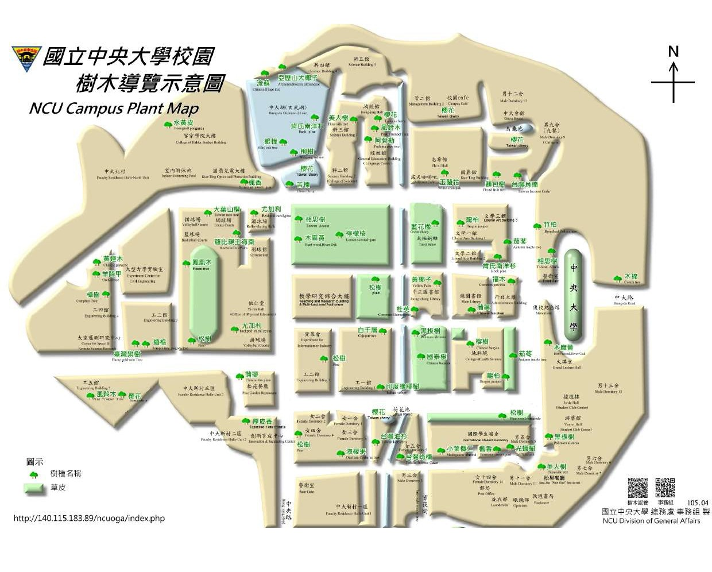

# NCU_WebsiteDesign
<!DOCTYPE html>
<html lang="zh-TW">
<head>
<meta charset="UTF-8">
<title>中央大學生態與保育資訊網</title>

<style>
body{
    margin:0;
    font-family: Arial, sans-serif;
    background-color:#2e5b2e;
    color:white;
}

/* Header */
.header{
    background:#1f3f2b;
    padding:20px;
    display:flex;
    justify-content:space-between;
    align-items:center;
}

.header-title{
    font-size:28px;
    font-weight:bold;
}

.header-sub{
    font-size:14px;
}

/* Navbar */
.nav{
    display:flex;
}

.nav a{
    flex:1;
    text-align:center;
    padding:15px;
    background:#6e9f6e;
    color:white;
    text-decoration:none;
    font-weight:bold;
}

.nav a:hover{
    background:#4e7f4e;
}

/* Main */
.container{
    display:flex;
    padding:20px;
    gap:20px;
}

/* Left big image */
.left{
    flex:2;
    position:relative;
}

.left img{
    width:100%;
    border-radius:10px;
    opacity:0.8;
}

.text-overlay{
    position:absolute;
    bottom:30px;
    left:30px;
    font-size:26px;
    font-weight:bold;
}

/* Right side */
.right{
    flex:1;
    display:flex;
    flex-direction:column;
    gap:20px;
}

/* Map box */
.map-box{
    background:#5c7f5c;
    padding:20px;
    border-radius:20px;
    text-align:center;
}

.map-box img{
    width:80%;
}

/* Animal / Plant */
.box{
    padding:20px;
    border-radius:20px;
}

.animal{
    background:#3c7a7a;
}

.plant{
    background:#7a6a3c;
}

.box h3{
    margin-top:0;
}

</style>
</head>

<body>

<!-- Header -->
<div class="header">
    <div>
        <div class="header-title">中央大學 生態與保育資訊網</div>
        <div class="header-sub">National Central University Ecological and Conservation Information Website</div>
    </div>
    
</div>

<!-- Navbar -->
<div class="nav">
    <a href="#">首頁<br>Home</a>
    <a href="#">中大生態地圖<br>NCU Ecology Map</a>
    <a href="#">資源中心<br>Resources</a>
    <a href="#">參與我們<br>Join Us</a>
</div>

<!-- Main -->
<div class="container">

    <!-- Left -->
    <div class="left">
        
        <div class="text-overlay">
            生活在中央大學，<br>
            但我們究竟對周遭的環境及其保育了解多少呢？
        </div>
    </div>

    <!-- Right -->
    <div class="right">

        <div class="map-box">
            <h3>生態地圖</h3>
            
        </div>

        <div class="box animal">
            <h3>動物</h3>
            台灣藍鵲<br>
            赤腹松鼠<br>
            斯文豪氏攀蜥<br>
            澤蛙<br>
            霜白蜻蜓
        </div>

        <div class="box plant">
            <h3>植物</h3>
            台灣肖楠<br>
            龍柏<br>
            白千層<br>
            相思樹<br>
            櫻花
        </div>

    </div>

</div>

</body>
</html>
